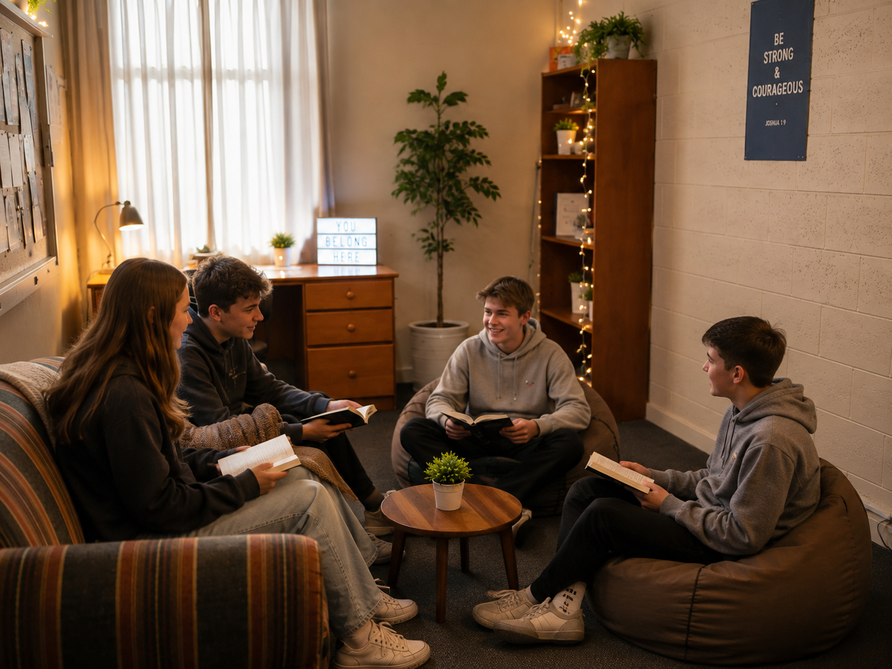
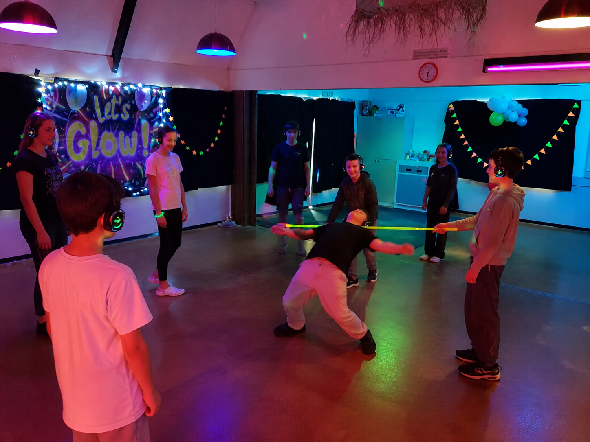
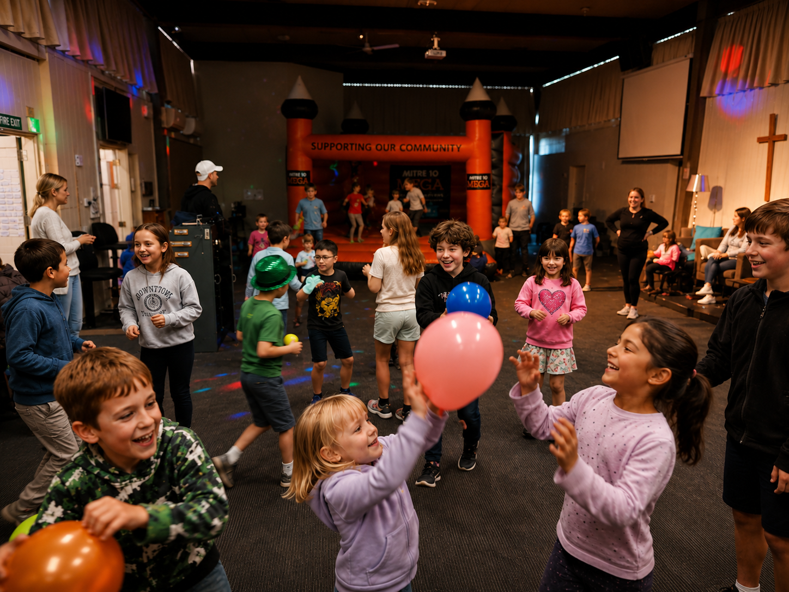

Ministry roles at St Timothy's
Part-time, paid, and open to anyone — these roles are a genuine chance to lead, disciple and support young people while you build ministry experience.
Youth Ministry
2 co-lead roles · 8–12 hours eachLead and disciple young people in their faith journey — from weekly youth group to walking alongside them day to day.
Years 9–13: Share responsibility for biblical teaching, pastoral care, volunteer leadership, and safe, welcoming gatherings where young people can grow, belong, and invite friends.
Download job description (PDF)Intermediate Ministry
5 hoursInspire and support intermediate-age students as they take their first steps in growing their faith.
Years 7–8: Lead a weekly Sunday study and small group, build pastoral relationships, run 2–3 social events each term, and help young people transition into youth group.
Download job description (PDF)Children's Support Worker
5 hoursSupport our Children's Leader in nurturing our youngest members as they discover God's love.
Years 0–6: Help deliver weekly children’s ministry, prepare teaching activities and resources, and take the lead on holiday programmes and special children’s events.
Download job description (PDF)


*Note: People in these images are AI-generated.
We'd love to hear from you.
Whether it's a place to live, a role to grow into, or both — get in touch and let's have a chat about what fits.